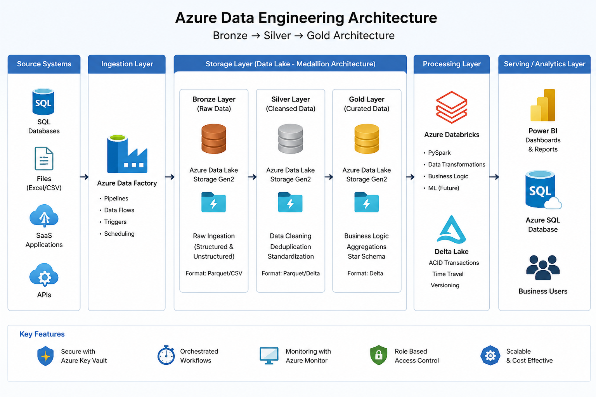

ADF | Databricks | PySpark | SQL
I build scalable data pipelines and transform raw data into business insights.
Download ResumeStarted as a PHP backend developer and transitioned into Azure Data Engineering to focus on scalable data pipelines and analytics systems.
Experienced in building end-to-end ETL pipelines using Azure Data Factory, Databricks, and PySpark, following Bronze, Silver, Gold architecture.
Skilled in transforming raw data into reliable, analytics-ready datasets and designing pipelines that support reporting and business insights.
Data Engineering
ETL Pipelines, Data Modeling
Programming
Python, PySpark, SQL
Cloud
Azure, ADLS Gen2, ADF
Big Data
Databricks, Delta Lake
Databases
MySQL, Azure SQL
Visualization
Power BI
Tools
Git, GitHub
Concepts
SCD Type 1 & 2, Data Warehousing
End-to-end Azure pipeline for processing customer financial datasets.
Tech: ADF, ADLS, Databricks, SQL, Power BI
View CodeScalable ETL pipeline for customer transaction and loan analytics.
Tech: Databricks, PySpark, Delta Lake, ADF
View CodeDynamic Azure pipeline for automated ingestion and large-scale data processing.
Tech: ADF, Databricks, PySpark, ADLS, Delta Lake
View Code
Azure Data Engineering pipeline (ADF + ADLS + Databricks + Delta Lake)
I am actively seeking opportunities to build scalable data solutions.
Contact MeEmail: jayavarapusrimani@gmail.com
Phone: +91-8309779064